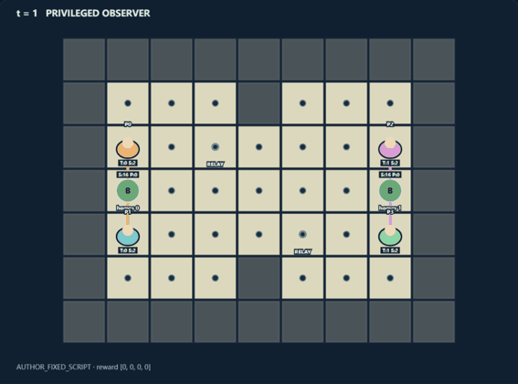
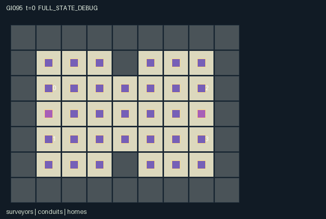

GI095 / SPATIAL
铜线接力
围绕据点、补给转移与连接供给线进行团队配合和竞争，保存完整实际得分轨迹。
Original saved demonstration
Recorded native state, often authored scripts or interventions; information scope and failures are preserved in the original provenance. This is a saved demonstration, not live browser play.

Release verification episode
Untrained uniform legal actions. Actual JAX state sampled along the full original episode; full-state debug camera. No human performance or learning claim.

Run this game
crucibles play --game 95
Start Python locally, then open the address printed by the terminal. Installation, multiplayer, takeover and keyboard controls →
Objective, rewards & ending
Exact task contract
{
"objective": "Two pairs of teammates compete to accumulate 12 relay pulses through physically adjacent supply conduits. Both relay sites may be captured by either team.",
"natural_termination": "Any team reaches at least 12 cumulative pulses, including a simultaneous tie. Horizon 80 otherwise. No unique winner is fabricated for ties.",
"interaction": "Building costs 2 carried units, repairing or cutting costs 1, handoffs require paired consent, and linked restocking drains shared team stock. Enemy occupation breaks connectivity immediately; isolated nonhome conduits decay every third tick. Defending a relay's tile can deny enemy occupation.",
"observation_access": "All state is public and repeated in every role observation with an own-role one-hot. Ownership, supply links, occupation, stocks, pulses and map are actual kernel state. Every active site and agent is visible to all roles; rocks have inactive site masks."
}Declared per-step reward bounds: -1 to 1. Observability: fully_observable.
Rules
- Connect owned conduit cells by cardinal adjacency to your home. Enemy occupation cuts the connection at that cell.
- Laying a conduit costs 2 supply. Repairing it or cutting a nearby enemy conduit costs 1. Home hardware is indestructible but can be occupied.
- Two adjacent teammates choosing transfer shift one unit from the richer pack to the poorer pack, once per participant per tick.
- Restock by up to 2 through a connected friendly conduit; teammates draw from the same finite stock.
- Every third tick disconnected nonhome conduits lose durability. Every fourth tick connected owned relay sites produce pulses and each stock gains one unit.
- Each role receives half its team's pulse count minus half the opponent's. First reaching 12 ends play, preserving simultaneous ties.
- Displayed supply and contention are actual state. No performance or strategy result is claimed.
Original mechanism document (historical status wording retained)
# Copper Relay
A/O/U/H = 4/393/9/80. Two teams of two surveyors build, defend and cut actual supply networks. Team membership is public and fixed: roles 0 and 1 are west team 0, roles 2 and 3 are east team 1. Homogeneous commands allow construction, raids, defense and resource handoffs.
## Rules and causally coupled decisions
The original 9 by 7 map has 35 interior site slots, with inactive rocks at [4,1] and [4,5]. Home sites [1,3] and [7,3] start owned with durability 3. Other sites start neutral. Every active site's position, owner, durability, linked status and enemy-occupation status are real state. The scoring relay sites are [3,2] and [5,4]; either team may own either relay.
Supply follows cardinally adjacent sites with the same owner from that owner's home. A site occupied by an enemy is excluded from reachability, even if its durability is still positive. Connectivity is recomputed by a bounded 35-hop flood through the actual sites. A physically present raider can therefore interrupt multiple downstream opportunities without receiving an immediate shaping bonus. Home hardware cannot be destroyed, but occupation can interrupt its network.
Each role begins with 4 supply and can carry at most 6. Laying a neutral conduit on the current tile costs 2 and sets durability 3. Repairing a friendly conduit costs 1 and adds one durability up to 3. Cutting chooses the lowest-index enemy nonhome site at Manhattan distance at most 1, costs 1, and removes one durability; zero durability returns a site to neutral. Choices resolve in rotating role order, making same-tick repair/attack order a visible clock-dependent rule.
Two adjacent teammates both choosing transfer move one unit from the richer pack to the poorer pack. Each participant transfers at most once that tick. Restocking on a connected friendly tile draws up to 2 from the team's shared finite stock, capped by pack capacity. Restocking uses the post-movement network before that step's operations; new construction becomes usable next tick. Both teammates consume the same stock. Every fourth tick each stock gains one up to 24, so excessive private restocking constrains a partner's future construction.
Every third tick, disconnected nonhome conduits decay by one durability. Connectivity is recomputed after this decay. Every fourth tick, each connected owned relay generates one pulse. Each teammate receives 0.5 times own-team pulses minus 0.5 times opposing-team pulses. Reaching 12 cumulative pulses ends the game; both teams may reach that level together, and a tie is retained. Otherwise the horizon is 80. The number 12 is a game termination rule, not an acceptance or performance gate.
Commands are 0 wait; 1/2/3/4 movement; 5 lay/repair; 6 cut; 7 teammate handoff; 8 restock. Movement into pre-step occupied cells and competing destinations is blocked. A defender standing on a relay can stop a raider from entering; leaving for supplies opens that physical opportunity. Enemy-controlled tiles otherwise remain traversable.
Plausible plans include short defended relay connections, or two-branch expansion with one teammate resupplying and one raiding. A redundant path costs extra carried supply but can survive a cut that a cheap single chain cannot. Holding a relay may preserve production while foregoing repairs or a raid elsewhere. Teammates who build independently can drain shared stock or leave the same cut vertex undefended. These tradeoffs are mechanistic hypotheses; no policy has been evaluated.
## Information, visible state and declared bounds
All four roles see the same public map, agents, team stocks, site ownership, durability, actual supply links, occupation and scores, plus their own identity. There are 393 float32 columns. Neutral sites are drawn as neutral sites, not fabricated active supply. Rock slots are inactive. Agent team and pack attributes permit a role view to explain resource access without introducing private information.
Agents occupy distinct traversable cells. Site positions are fixed and unique. Pack is in [0,6], durability in [0,3], stock in [0,24], and ownership in {-1,0,1}. Home ownership/durability remain fixed. Linked sites belong to a team, are uncontested and reach its home through actual eligible cells. The two relays bound each role's step reward to [-1,1]. No artificial winner, learned defense or significant advantage is inferred from those definitions.
## Literal source evidence
- Bounded physical supply flood: `candidate.py:12`, literal `def network(self, owner, contested, active, positions):`.
- Enemy occupation changes links: `candidate.py:27`, literal `s["contested"] = s["cell_active"] & (s["owner"] >= 0) & jnp.any(`.
- Original sites and map: `candidate.py:32`, literal `def reset(self, key):`.
- Public observation packing: `candidate.py:62`, literal `def observe(self, s):`.
- Build cost: `candidate.py:101`, literal `building = (a[i] == 5) & (owner[here] < 0) & (pack[i] >= 2)`.
- Enemy-cut opportunity: `candidate.py:108`, literal `targets = ((owner >= 0) & (owner != team) & ~home_cell & s["cell_active"] &`.
- Paired finite-resource transfer: `candidate.py:120`, literal `give = (a[i] == 7) & ~used[i] & (pack[i] > 0) & jnp.any(partners)`.
- Linked shared-stock restocking: `candidate.py:126`, literal `take = (a[i] == 8) & (s["owner"][here] == team) & s["linked"][here] & (pack[i] < 6) & (stock[team] > 0)`.
- Delayed decay: `candidate.py:133`, literal `decay = s["cell_active"] & (owner >= 0) & ~s["linked"] & ~home_cell & (jnp.mod(t,3) == 0)`.
- Actual relay pulse scoring: `candidate.py:138`, literal `pulses = jnp.stack([jnp.sum((s["relay"] & s["linked"] & (owner == team)).astype(jnp.int32),dtype=jnp.int32)`.
- Natural end and tie preservation: `candidate.py:145`, literal `s["terminated"] = jnp.any(s["score"] >= 12)`.
- Absorbing terminal branch: `candidate.py:158`, literal `def absorb(self, key, state, actions):`.
## Witnesses and possible future variation
One script attempts two initial connected networks, then west role 1 enters east's vacated relay. Its paired branch keeps the east defender in place. The intended comparison is physical entry, contested, linked, durability and a later pulse, not a claimed winning raid. A second script and pair isolate consent to a teammate supply transfer. Both remain unexecuted.
Future separately assigned layouts, home positions, relay placement, replenishment timing or team composition could change whether defense, redundant links or raids are sensible. Those variants are not implemented as hidden reset randomness and do not constitute measured transfer.
## Provenance, interface and status
Source SHA-256: 2040229c883b0abaa228b1d952c982d6fa7fb453b0371148dd299504e6a88af3.
This is original author-written game code and layout for this assigned train-stream proposal, source attempt 00, generation window 0. No previous candidate, execution result, replay, ranking, training output or final-test material was read. No upstream game code, benchmark layout, texture, heldout implementation or scoring code was copied. Original authorship does not prove structural non-isomorphism.
The supplied official JaxMARL README informed the distinction between the native flat kernel and an agent-keyed public integration API. The supplied Pgx README informed explicit state, legal-mask and terminal API concepts. The supplied Craftax README informed JAX game-state and reset/render separation concepts. The supplied PureJaxRL README was read as an algorithm/integration reference, not a game library; no PPO implementation was copied and the frozen scientific learner is unchanged. The supplied Craftax_Baselines/ppo_rnn.py was not read or used. Exact copied-reference hashes and official source URLs are in generation_record.json.
Every declared nonterminal command is legal. A physically blocked movement or unavailable object operation is a deterministic failed attempt, not an out-of-range action. Out-of-range integers map to command 0. No role is individually removed before joint termination. Each role retains command 0; after joint termination only 0 is legal. The absorbing raw call ignores the provided actions, returns the same complete state and observation, leaves t unchanged, returns zero float32 rewards and all-true dones, and preserves actual terminal causes. Otherwise t advances exactly once. Natural termination has priority over the horizon, so terminated and truncated cannot both be true. No reset occurs inside raw_step.
All observation columns are covered exactly once in manifest.json, in the literal concatenate order used by observe. Raw integer/bool state is cast to float32 without normalization. Visibility is fully public: active entity visibility is broadcast to all roles; map.public is true. Fixed or derived active/visibility masks do not add hidden policy information. Resolved objects retain their last public position and status in flat state, while the role renderer suppresses their inactive glyphs. A separate full-state debug view must remain labelled as such. The source uses only int32 and bool state, representing small categorical design values losslessly as int32. The reset key remains external provenance and is intentionally unused by these deterministic initial rules.
The native kernel is not a public adapter implementation. Agent-keyed dictionaries, __all__, space objects and replay/UI integration belong to the coordinator's separate presentation layer. The author has not exercised that layer. The six author files satisfy a source-delivery scope; they do not by themselves establish community product acceptance.
No candidate import, reset, raw_step, JAX call, validator, training run, replay, browser playback or numerical parity test was executed by this author. Pure text and JSON metadata review and byte hashing are the only checks performed. playthrough.json contains literal finite action vectors, seeds and explicitly unexecuted paired intervention hypotheses. A later sealed replay must retain mismatches, zero effects, failures and early terminals as actual evidence. No script is a successful trajectory receipt, solvability proof, learned policy, optimal strategy, meta-learning result or generalization result. Model tokens and API charges are unknown rather than invented.
Reference URLs read as supplied snapshots:
- https://github.com/bold-lab-ai/JaxMARL/blob/main/README.md
- https://github.com/sotetsuk/pgx/blob/main/README.md
- https://github.com/luchris429/purejaxrl/blob/main/README.md
- https://github.com/MichaelTMatthews/Craftax/blob/main/README.md
Commands
Roles & abilities
agent_0 West team 0 north starter
agent_1 West team 0 south starter
agent_2 East team 1 north starter
agent_3 East team 1 south starter
Observation permissions
Training receives only the original observation rows. Role cameras use declared visibility; debug cameras are explicitly marked. Local benchmark records log debug exposure and role takeover history.
Exact observation layout
[
{
"slice": [
0,
8
],
"meaning": "Agent [x,y] positions in role order.",
"visibility": "public"
},
{
"slice": [
8,
12
],
"meaning": "Public team assignments: roles 0,1 west team 0; roles 2,3 east team 1.",
"visibility": "public"
},
{
"slice": [
12,
16
],
"meaning": "Supply units carried by each agent, 0 to 6.",
"visibility": "public"
},
{
"slice": [
16,
20
],
"meaning": "Last nonabsorbing step blocked movement intents.",
"visibility": "public"
},
{
"slice": [
20,
90
],
"meaning": "Interior tile-center positions in y-major order, including inactive rock sites.",
"visibility": "public"
},
{
"slice": [
90,
125
],
"meaning": "True for actual traversable conduit sites; false at the two rocks.",
"visibility": "public"
},
{
"slice": [
125,
160
],
"meaning": "Conduit ownership: -1 neutral, 0 west team, 1 east team.",
"visibility": "public"
},
{
"slice": [
160,
195
],
"meaning": "Conduit durability 0 to 3.",
"visibility": "public"
},
{
"slice": [
195,
230
],
"meaning": "Actual uncontested same-owner connection to that owner's home.",
"visibility": "public"
},
{
"slice": [
230,
265
],
"meaning": "Enemy agent currently occupies an owned conduit, interrupting supply.",
"visibility": "public"
},
{
"slice": [
265,
300
],
"meaning": "The two scoring relay sites at [3,2] and [5,4].",
"visibility": "public"
},
{
"slice": [
300,
304
],
"meaning": "Actual west/east home positions [1,3] and [7,3].",
"visibility": "public"
},
{
"slice": [
304,
306
],
"meaning": "Shared team stock 0 to 24, used for linked restocking.",
"visibility": "public"
},
{
"slice": [
306,
308
],
"meaning": "Cumulative relay pulses credited to each team.",
"visibility": "public"
},
{
"slice": [
308,
371
],
"meaning": "Public y-major 7 by 9 map; 0 ground and 1 wall or rock.",
"visibility": "public"
},
{
"slice": [
371,
375
],
"meaning": "Per-role conduit build or repair on the last nonabsorbing step.",
"visibility": "public"
},
{
"slice": [
375,
379
],
"meaning": "Per-role successful durability attack on the last nonabsorbing step.",
"visibility": "public"
},
{
"slice": [
379,
383
],
"meaning": "Participants in the last nonabsorbing step's supply handoffs.",
"visibility": "public"
},
{
"slice": [
383,
385
],
"meaning": "Whether each team received any relay pulse on the last nonabsorbing step.",
"visibility": "public"
},
{
"slice": [
385,
386
],
"meaning": "Elapsed nonabsorbing steps, 0 through 80.",
"visibility": "public"
},
{
"slice": [
386,
387
],
"meaning": "Joint episode completion; true for natural completion or horizon.",
"visibility": "public"
},
{
"slice": [
387,
388
],
"meaning": "Natural terminal cause, preserved by absorbing calls.",
"visibility": "public"
},
{
"slice": [
388,
389
],
"meaning": "Horizon cause; false when natural completion coincides with horizon.",
"visibility": "public"
},
{
"slice": [
389,
393
],
"meaning": "Own agent identity as A-way one-hot in agent_0 through agent_3 order.",
"visibility": "self"
}
]Entity visibility & attributes
[
{
"id": "surveyors",
"kind": "agent",
"count": 4,
"position": [
"agent_pos"
],
"active": [
"agent_active"
],
"visibility": [
"agent_visible"
],
"attributes": [
{
"state_path": [
"team"
],
"meaning": "Team: west 0, east 1",
"display": "category"
},
{
"state_path": [
"pack"
],
"meaning": "Carried supply, maximum 6",
"display": "bar"
},
{
"state_path": [
"blocked"
],
"meaning": "Last movement was blocked",
"display": "flag"
}
]
},
{
"id": "conduits",
"kind": "landmark",
"count": 35,
"position": [
"cell_pos"
],
"active": [
"cell_active"
],
"visibility": [
"cell_visible"
],
"attributes": [
{
"state_path": [
"owner"
],
"meaning": "Owner: neutral -1, west 0, east 1",
"display": "category"
},
{
"state_path": [
"charge"
],
"meaning": "Conduit durability, maximum 3",
"display": "bar"
},
{
"state_path": [
"linked"
],
"meaning": "Connected to owner's home",
"display": "flag"
},
{
"state_path": [
"contested"
],
"meaning": "Enemy occupation interrupts supply",
"display": "flag"
},
{
"state_path": [
"relay"
],
"meaning": "Scoring relay site",
"display": "flag"
}
]
},
{
"id": "homes",
"kind": "resource",
"count": 2,
"position": [
"home_pos"
],
"active": [
"home_active"
],
"visibility": [
"home_visible"
],
"attributes": [
{
"state_path": [
"stock"
],
"meaning": "Shared team stock, maximum 24",
"display": "bar"
},
{
"state_path": [
"score"
],
"meaning": "Cumulative relay pulses",
"display": "number"
}
]
}
]Actual verification & provenance
Per-game execution receipt
{
"game": "gi095",
"status": "PASS",
"verification_revision": 2,
"source_sha256": "2040229c883b0abaa228b1d952c982d6fa7fb453b0371148dd299504e6a88af3",
"seed": 20261101,
"runtime": {
"jax": "0.4.38",
"numpy": "1.26.4",
"devices": [
"TFRT_CPU_0"
]
},
"dimensions": {
"num_agents": 4,
"observation_size": 393,
"num_actions": 9,
"max_steps": 80
},
"checks": {
"eager_reset": {
"status": "PASS",
"seconds": 1.3544187545776367
},
"observation_spaces_legal_masks": {
"status": "PASS",
"seconds": 0.20220208168029785
},
"eager_step": {
"status": "PASS",
"seconds": 3.9094386100769043
},
"jit_reset": {
"status": "PASS",
"seconds": 0.7051100730895996
},
"jit_step": {
"status": "PASS",
"seconds": 4.296044588088989
},
"eager_jit_integer_parity_float_measurement": {
"status": "PASS",
"seconds": 0.0009999275207519531
},
"jit_vmap_reset": {
"status": "PASS",
"seconds": 0.8351924419403076
},
"jit_vmap_step": {
"status": "PASS",
"seconds": 5.870380640029907
},
"outer_autoreset_api": {
"status": "PASS",
"seconds": 5.5885725021362305
},
"full_original_horizon_episode_and_render": {
"status": "PASS",
"seconds": 4.83722996711731
}
},
"human_scores": null,
"browser_controls": "PENDING",
"failures": [],
"elapsed_seconds": 28.37330389022827,
"float_parity_max_abs": 0.0,
"numerical_parity": "EXACT",
"raw_terminal_absorbing": "PASS",
"terminal_outer_reset": "PASS",
"episode_steps": 80,
"scripted_random_returns": [
0.0,
0.0,
0.0,
0.0
],
"terminal": true,
"demo_information": "FULL_STATE_DEBUG",
"demo_frames": 28,
"render_roles_checked": 4
}Chromium control verification
{
"game": "gi095",
"status": "PASS",
"human_scores": null,
"engineering": true,
"checks": [
"catalog_selected_and_real_native_reset",
"dom_queue_and_native_step",
"second_participant_ownership_and_native_joint_step",
"all_roles_individually_controllable_no_role_cap",
"explicit_debug_camera",
"release_to_pure_ai_without_reset"
],
"seconds": 7.012881278991699
}Original identity and file hashes
{
"id": 95,
"key": "gi095",
"title": "铜线接力",
"summary": "围绕据点、补给转移与连接供给线进行团队配合和竞争，保存完整实际得分轨迹。",
"tags": [
"团队对抗",
"补给接力"
],
"family": "spatial",
"dimensions": {
"num_agents": 4,
"observation_size": 393,
"num_actions": 9,
"max_steps": 80
},
"source_sha256": "2040229c883b0abaa228b1d952c982d6fa7fb453b0371148dd299504e6a88af3",
"manifest_sha256": "91614b802acddca046d8b3493e01fd89c96bcc907c9b145bef4ee2011c019a82",
"files": [
{
"file": "candidate.py",
"sha256": "2040229c883b0abaa228b1d952c982d6fa7fb453b0371148dd299504e6a88af3",
"bytes": 10126,
"origin": "work/exp_2/game_incubator_v3/community_games222_225_visualization_root222_v1/native154_candidate/registry/v2/games/game-v3-00095/candidate.py"
},
{
"file": "manifest.json",
"sha256": "91614b802acddca046d8b3493e01fd89c96bcc907c9b145bef4ee2011c019a82",
"bytes": 15938,
"origin": "work/exp_2/game_incubator_v3/community_games222_225_visualization_root222_v1/native154_candidate/registry/v2/games/game-v3-00095/manifest.json"
},
{
"file": "scene.json",
"sha256": "9fdd17d1af10d7a89870b1c9163a7251133bf37c4eb67400e6f49608430698fe",
"bytes": 9497,
"origin": "work/exp_2/game_incubator_v3/community_games222_225_visualization_root222_v1/native154_candidate/registry/v2/games/game-v3-00095/scene.json"
},
{
"file": "mechanism.md",
"sha256": "ec5bbbe6744a62304429278e17c2d83f46ecab60adbd6ef99667ab4190cb9f9d",
"bytes": 10588,
"origin": "work/exp_2/game_incubator_v3/sources/game-v3-00095/attempt_00/mechanism.md"
},
{
"file": "playthrough.json",
"sha256": "38b48dfdc74ff26cd806d02ce8007c097810b5ae5338f05d1b7349057b3d1060",
"bytes": 4955,
"origin": "work/exp_2/game_incubator_v3/sources/game-v3-00095/attempt_00/playthrough.json"
}
],
"original_status": "NATIVE154_REFERENCE",
"original_saved_replay": true,
"release_validation": "PASS",
"human_scores": null,
"browser_validation": "PASS"
}